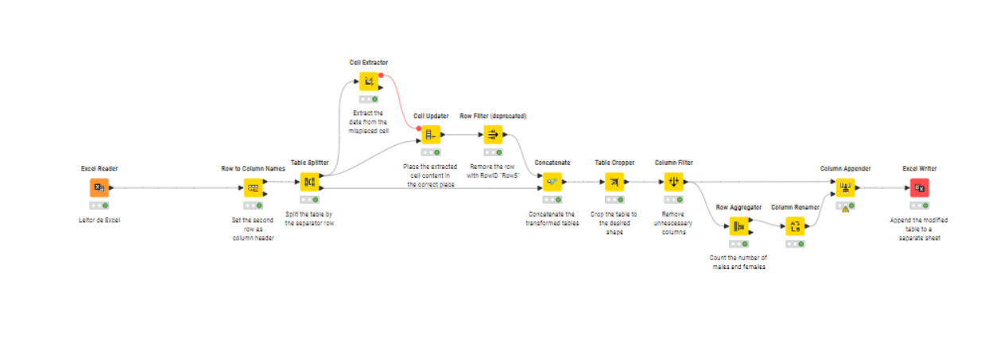

Primeiros passos com o
KNIME Analytics Platform
O KNIME Analytics Platform é uma ferramenta visuale intuitiva para
análise de dados, automação de processos e ciência de dados. Ele permite que
você crie fluxos de trabalho (workflows) sem precisar programar,
o que o torna ideal para quem quer otimizar tarefas repetitivas de análise e
transformação de dados de maneira simples e eficiente.
Aprenda os Termos Básicos do KNIME
Antes de começar a usar o KNIME, é importante conhecer alguns termos chave
que serão usados ao longo deste guia. Aqui estão os principais:
- Workflow
(Fluxo de Trabalho): É o “mapa” do seu processo, um conjunto de passos
conectados que formam seu projeto. Pense nele como o seu processo de
análise de dados completo.
- Node
(Nó): Cada node no KNIME representa uma ação ou etapa específica do
seu fluxo de trabalho. É nele que você configura as transformações ou
análises dos dados.
- Connector
(Conector): São as linhas que conectam os nodes. Elas indicam a sequência
e o fluxo de dados entre as etapas do seu workflow.
- KNIME
Hub → Um Repositório online com exemplos de workflows e extensões. É
como se fosse uma pasta (ou drive) onde pessoas do mundo todo publicam
seus trabalhos para divulgação ou para ajudar outras pessoas que queiram
resolver problemas parecidos.
Como funciona
a Interface do KNIME Analytics Platform
Agora que você já sabe o mínimo sobre as nomenclaturas, podemos partir para
a área de trabalho do KNIME. Ela é composta por 2 layouts, o clássico (presente
nas versões antigas) e o moderno, que vamos utilizar nesse artigo.
PS: Você pode ocasionalmente intercalar entre os dois layouts conforme sua
preferência, mas a nossa explicação focará no Layout “moderno”.
Ao abrir o KNIME Analytics Platform, você verá a interface dividida em
várias seções. O layout é moderno e fácil de usar, com as seguintes partes
principais:
Figura 1 - Página inicial do Knime Analytics Platform
- Navegador de Ambiente: Aqui você pode acessar os
seus projetos locais e explorar os workflows públicos no KNIME Hub. Para
acessar os workflows do Hub, é necessário criar uma conta e fazer login.
- Painel de Exemplos: Mostra workflows prontos
para que você possa começar rapidamente ou buscar inspiração.
- Criar Workflow: A partir desta opção, você
pode criar um novo workflow para começar seu projeto.
- Workflows Recentes: Aqui você encontra os
projetos que você acessou ou editou recentemente.
Ao criar
ou acessar um Workflow, a janela de edição é habilitada na interface, trazendo
as opções abaixo:
Figura 2 - Tela do editor de Workflow do KNIME
- Navegador
de Abas: Permite alternar entre diferentes workflows que você tenha
aberto (clique em “+” para adicionar um novo Workflow rapidamente).
- Guias
laterais:
o Info:
Acesse a descrição do workflow ou componente selecionado.
o Nodes:
Centraliza todos os nodes disponíveis no KNIME Analytics Platform, com uma
busca inteligente, fica fácil você encontrar o que precisa e simplesmente
arrastar para a área de edição.
o Explorer:
Navegue pelas pastas que estão dentro do seu diretório local do KNIME ou então
acesse os diretórios do Hub da comunidade.
o Monitor:Verifique,
monitore e acesse alertas e possíveis erros que podem impedir seu workflow de
rodar corretamente.
- Help,
Preferences e Menu: Acesse materiais de apoio, faça configurações
avançadas e instale novas extensões.
- Workflow
Editor: Área de trabalho para desenvolvimento do Workflow ativo.
Adicione novos nodes arrastando e conectando eles.
- Node
Monitor: Mostra os resultados do node selecionado e também o valor das
variáveis ativas.
Como criar e editar Workflows no KNIME Analytics Platform
Para trabalhar com um workflow podemos criar um novo, acessar um antigo,
abrir um exemplo ou até mesmo explorar os workflows da comunidade (em breve
faremos um artigo falando só disso). Isso pode ser feito de 3 formas:
- Clicando
em “New Workflow” na tela inicial do KNIME;
- Acessando
os Workflows recentes também na página inicial;
- Clicando
em + no navegador de abas presente na tela de Edição de Workflow (quando
houver um workflow aberto);
Dentro desse novo Workflow, você pode começar seu desenvolvimento clicando e
arrastando nos nodes que se encontram no painel lateral na guia de nodes.
Como são estruturados os Nodes
Os nodes são o coração do desenvolvimento no KNIME, é através dele que você
pode ler/gravar arquivos de diversos formatos, operar transformações, operações
matemáticas, sequências lógicas e de automação em diversos níveis, além de
criação de gráficos e uma infinidade de outras funções, incluindo scripts de
programação, algoritmos estatísticos e machine learning.
Como é estrutura de um node:
Figura 3 - Diagrama de um node no KNIME
- Tipo do Node: O título principal que você
vai encontrar logo acima do node fala sobre o tipo de node que ele é, isso
facilita tanto na hora de você buscar nodes novos quanto na hora de você
fazer a manutenção dos nodes já inseridos no seu Workflow, facilitando a
documentação e identificação dos processos.
- (Input port) Porta de
Entrada: É
onde você conecta a tabela de dados que serão processados.
- (Output Port) Porta de
Saída:
Nela está presente o resultado do processamento do node atual. Conecte ela
a uma porta de entrada de outro node para dar continuidade no processo.
Também é possível através da seção “node monitor” verificar o resultado
dos dados processados.
- (Node Annotation) Comentário
do node:
Essa descrição curta pode ser editada manualmente para facilitar a
documentação ou guardar informações curtas sobre o que está sendo feito no
node.
- (Node Status) Status do
node:
Este farol pode ter 4 resultados específicos, são eles:
Figura 4 - Farol de Status de um Node no KNIME
- Not configured/Não
configurado – O
node ainda não foi configurado ou não possui dado conectado a ele;
- Configured/Configurado – O node está devidamente
configurado e aguardando a execução;
- Executed/Executado – O node foi processado com
sucesso e pode ter seus resultados visualizados na parte inferior da tela
(o node monitor);
- Error/Erro – O node foi executado mas
algo deu errado.
Há 3
situações em que o Status de um node pode mudar, ao configurar, executar ou
resetar um node. Todas essas ações podem ser encontradas:
- Quando você passa o mouse
sobre um nó, uma barra de ações aparece, oferecendo as seguintes opções
“Configure”, “Execute”, “Cancel” (para nodes em execução) e “Reset”.
Figura 5 - Botões de ação de um node no KNIME
- Ao clicar com o botão
direito em um node, você pode selecionar as opções no “menu de contexto”:
Figura 6 - Menu de contexto de um node no KNIME
- Com os
atalhos do teclado:
- Tecla
“delete”: excluir o node
- Tecla
F6: Configurar o node (também disponível com um duplo clique do mouse)
- Tecla
F8: Resetar o node
- Tecla
F9: Cancelar e interromper (quando em processamento) a execução de um
node
- Tecla
F7: Executar o node
- Tecla
F2: Editar o comentário do node
Como configurar um node
Para configurar um node, basta ajustar as configurações na sua caixa de
diálogo de configuração.
Você pode abrir a caixa de diálogo de configuração de um node de várias
formas:
- Dando
um duplo clique sobre o node
- Clicando
no botão Configurar na barra de ações do node
- Clicando
com o botão direito no node e selecionando Configurar no menu de
contexto
- Selecionando
o node e pressionando F6
Figura 7 - Configurando um node – KNIME
Como executar um node
Alguns nodes já chegam com o status “configurado” quando são criados. Esses
nodes podem ser executados sem a necessidade de ajustes nas configurações
padrão.
Para executar o node, você tem as seguintes opções:
- Clicar
no botão Executar na barra de ações do node
- Clicar
com o botão direito no node e selecionar Executar
- Selecionar
o node e pressionar F7
Figura 8 - Node com status executado – KNIME
Se a execução for bem-sucedida, o status do node passa para “executado”, o
que é representado pelo farol verde. Caso a execução falhe o farol vai mostrar
o status de erro, e as configurações e entradas do node precisarão ser
ajustadas conforme necessário.
Cancelar a execução de um node
Para cancelar a execução de um node, clique no botão Cancelar na
barra de ações do node, clique com o botão direito no node e selecione Cancelar,
ou selecione o node e pressione F9.
Como Resetar um node
Para resetar um node, clique no botão Resetar na barra de ações do
node, clique com o botão direito no node e selecione Resetar, ou
selecione o node e pressione F8.
Resetar um node também resetará todos os nodes na sequência do workflow. O
status do node(s) voltará de “executado” para “configurado”, e as saídas do
node serão zeradas.
Como funcionam as portas dos nodes no KNIME Analytics Platform
Cada node pode ter várias portas de entrada e saída. Quando conectamos
vários nodes em sequência, utilizando as portas de entrada à esquerda e as
portas de saída à direita, formamos o workflow. As portas de entrada dos nodes
à esquerda consomem os dados das saídas dos nodes à direita, ou seja, as portas
de saída fornecem dados aos nodes que vêm em seguida.

Figura 9 - Visão Geral de um Workflow – KNIME
Além de tabelas de dados, as portas de entrada e saída podem fornecer outros
tipos de entradas e saídas. Para cada tipo, o par de portas de entrada e saída
será diferente.
Figura 10 - Tipos de porta – KNIME
Uma porta de saída só pode ser conectada a uma porta de entrada do mesmo
tipo — dados para dados, modelo para modelo, e assim por diante.
Algumas portas de entrada podem ser vazias, como a porta de entrada de dados
do Árvore de Decisão. Isso significa que a entrada é opcional, e o node
pode ser executado mesmo sem ela. Já as entradas obrigatórias, indicadas por
portas de entrada preenchidas, precisam ser fornecidas para que o node possa ser
executado.
Como adicionar nodes ao Workflow
Existem 3 formas de adicionar nodes ao workflow:
- Arraste
e solte um node do repositório de nodes
- Dê um
duplo clique sobre um node dentro do repositório de nodes
- Use o
painel de adição rápida de nodes. Clique duas vezes no canvas ou arraste e
solte uma porta de node (entrada ou saída) no canvas para abrir o painel
de adição rápida de nodes. Esse painel contém até 12 nodes recomendados,
ou você pode buscar no painel pelo node desejado e, em seguida, clicar sobre
ele para adicioná-lo ao canvas.
Figura 11 - Clique e arraste para
adicionar um novo node na sequencia do Workflow
Como usar
o painel de adição rápida de nodes
Para
utilizar a adição rápida de nodes, você precisa permitir que o KNIME colete os dados
anônimos de uso. Isso pode ser feito ao iniciar o KNIME Analytics Platform
ou após mudar de workspace, selecionando Sim na caixa de diálogo “Ajude
a melhorar o KNIME”.
Como
substituir nodes em um workflow
Os nodes
podem ser movidos no editor de workflow arrastando-os. Para copiar nodes entre
workflows, selecione os nodes desejados, clique com o botão direito na seleção
e escolha Copiar no menu. No workflow de destino, clique com o botão
direito no editor de workflow e selecione Colar no menu.
Para
selecionar um node no editor de workflow, basta clicar sobre ele uma vez, e ele
será cercado por uma borda. Para selecionar múltiplos nodes, desenhe um
retângulo sobre os nodes com o mouse ou segure a tecla Ctrl enquanto clica nos
nodes desejados.
Comentários
e anotações
Dentro do
seu Workflow você tem duas opções para documentação:
- Comentário do node — Adicione um comentário a
um node individual dando um duplo clique no campo de texto abaixo do node
(Add a comment) e editando o texto.
Figura 12 - Botões de ação de um node
no KNIME
- Anotação do workflow (Workflow Annotation)—
Adicione um comentário geral ao workflow clicando com o botão direito no
editor de workflow e selecionando “New workflow annotation”. Um
campo de texto aparecerá no editor de workflow.
Figura 13 - Adicione uma anotação ao
Workflow do KNIME
Para
adicionar uma nova anotação, você também pode mudar para o modo de anotação
clicando no ícone 16 no canto superior direito da interface do usuário e
selecionando Modo de Anotação, ou pressionando T para entrar no
modo de anotação.
Figura 14 - Menu superior KNIME
Como
formatar o texto das anotações
Clique
duas vezes na anotação do workflow para adicionar texto e formatá-lo. Você pode
mudar a cor do contorno da anotação e usar a barra de formatação ou aplicar a
seguinte sintaxe:
- Para criar um título,
adicione sinais de número (#) seguidos de um espaço, antes de uma palavra
ou frase. O número de sinais de número corresponde ao nível de título
(<h1> a <h6>).
- Para criar uma lista com
marcadores, adicione um asterisco (*) seguido de um espaço.
- Para criar uma lista
numerada, adicione um número seguido de um ponto (1.), seguido de um espaço.
- Para deixar o texto em
negrito, itálico ou sublinhado, selecione o texto e pressione CTRL+b,
CTRL+i, CTRL+u.
Figura 15 - Formatando uma anotação de
workflow – KNIME
Dicas e Hacks gerais
- Adicione nós (nodes) arrastando da Node
Repository para o canvas.
- Conecte
nodes clicando e arrastando da porta de saída de um node
até a porta de entrada de outro.
- Alguns nodes possuem portas dinâmicas (+) nas
laterais que você pode adicionar clicando e escolhendo o tipo.
- Para inserir
um node entre dois já conectados, basta arrastá-lo para o
meio da conexão.
- Pesquise nodes pelo campo
de busca no topo da Node Repository.
- Clique ou passe o mouse
sobre um node para acessar a descrição, funções e portas disponíveis.
- Use o painel lateral para ver detalhes da configuração do node.
- Adicione ou edite a descrição do workflow
clicando no ícone
de caneta no painel lateral.
- Utilize o Assistente AI para te ajudar a criar workflows
ou tirar dúvidas (Acesso via KNIME Hub – é necessário
login). Ela pode ser usada em dois modos:
- Q&A Mode: Faça
perguntas sobre KNIME e receba respostas detalhadas.
- Build Mode: Expande seu
workflow automaticamente com base em um prompt
- Resetar um node apaga os
dados processados, mas mantém a configuração.
- Reduza o tamanho dos seus arquivos: antes de
salvar, resete
o workflow se o dado puder ser acessado novamente.
Esses foram os primeiros passos para entender
como funciona o KNIME Analytics Platform,
a proposta da ferramenta é ser acessível para quem busca otimizar a análise e o
tratamento de dados sem a necessidade de saber programar. Sua interface
intuitiva e visual facilita o entendimento das etapas de um projeto, desde a
extração até a geração de insights. Ao dominar os conceitos de workflows, nodes
e suas funcionalidades, você vai conseguir explorar melhor a plataforma e criar
soluções para diversos cenários.
KNIME na Prática: Construa um Modelo de Churn Sem Programação